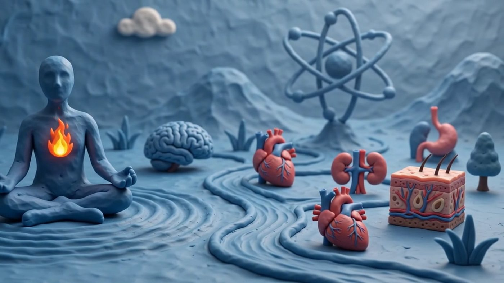
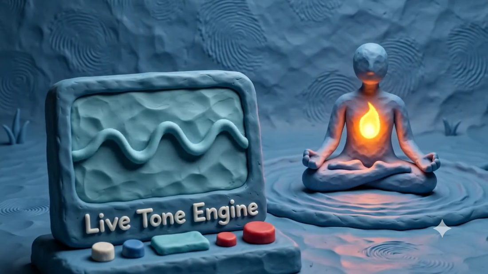

Two kinds of number,
never mixed.
Search "healing frequencies" and you get a wall of confident claims with nothing behind them. Search the literature and you get EEG bands and atomic transitions with no way to feel them. This atlas holds both, and keeps a hard line between.
- Measured science. EEG brainwave bands, NMR and MRI resonances, the caesium atomic clock. Each carries a published citation you can open.
- Traditional, unproven. Solfeggio tones, chakra pitches, the "528 Hz DNA repair" tone. Included because people look for them, and labelled every time as belief rather than evidence.
One switch flips the whole atlas between the two, so you always know which world you are standing in.
The idle rhythm of a relaxed, wakeful brain — strongest over the occipital lobe when the eyes close.
- Normal EEG Waveforms. StatPearls, NCBI Bookshelf.
- Iaccarino HF et al. Nature. 2016;540(7632):230–235.
- Healthy Sleep. MedlinePlus.
Nine maps, from the cortex to the atom.
- BrainLobes, deep structures, EEG bands
- BodyRegions and systems end to end
- OrgansHeart, lungs, gut, the rest
- MusclesNine groups in full 3D
- NervesSpinal cord, peripheral, vagus
- CellNucleus, membrane, mitochondria
- AtomProtons, electrons, real physics
- HarmonyThe Pythagorean tetractys and its ratios
- BrainwavesDelta through gamma, played as pulses

Specimens, laid out and labelled.
Every structure carries the frequency people attach to it — and either a published source, or an honest admission that there isn't one.
Live tone engine
Every tone is made
on your device.
Nothing is streamed and nothing is recorded. Most real physical frequencies here — megahertz to terahertz — are far above hearing, so the atlas plays a clearly-labelled audible stand-in and says so, rather than pretending. Anything under about 40 Hz becomes an isochronic pulse you can actually feel.
Start at a low volume, especially with headphones. If you have a seizure disorder, be aware that rhythmic pulsing sound can be a trigger.

Free for a week. Then $1.99, once.
The trial
Seven days
Everything unlocked. No card, no account, no email.
The unlock
$1.99
One payment, forever. Not a subscription — there is nothing to cancel.
Paid through Stripe; we never see your card. You get an unlock code by email that works on any device, so clearing your browser or switching laptops doesn't cost you the purchase.
What it does with your data: almost nothing.
The atlas has no accounts, no sign-in, no advertising and no trackers. It runs entirely in your browser — every diagram, every 3D model and every tone is generated on your device, and nothing about what you look at or listen to is sent anywhere.
Two things do leave this site, and neither is inside the atlas. Buying it can't happen offline, so checkout and the unlock code go through Stripe and this site's own small server. And this page you are reading now — not the atlas — counts anonymous visits with Umami, a cookieless service that records no personal data and sets nothing on your device. The atlas itself is deliberately left out of that counting.
Not medical advice.
Sound & the Body is an educational and creative tool. It does not diagnose, treat, cure or prevent any condition, and it is not a substitute for professional care. Claims that playing a tone heals or activates an organ, a cell or a particle are traditional or speculative beliefs, not established science, and the atlas says so wherever it shows them.